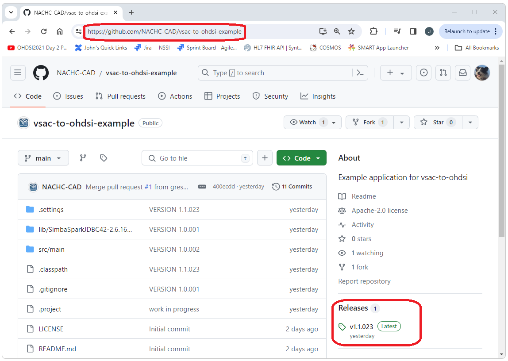
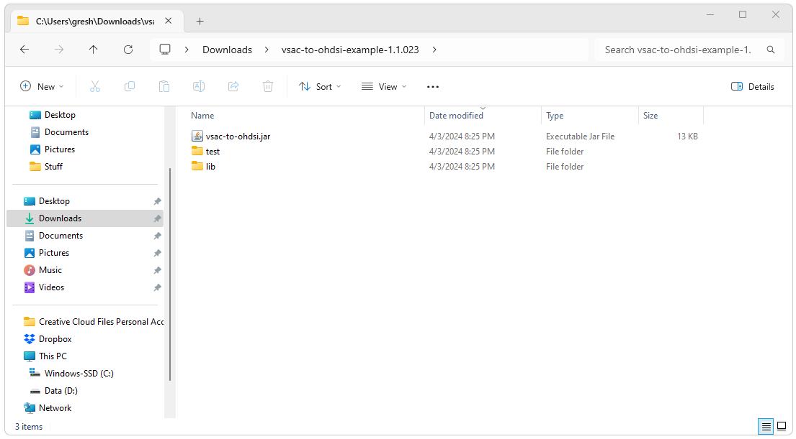
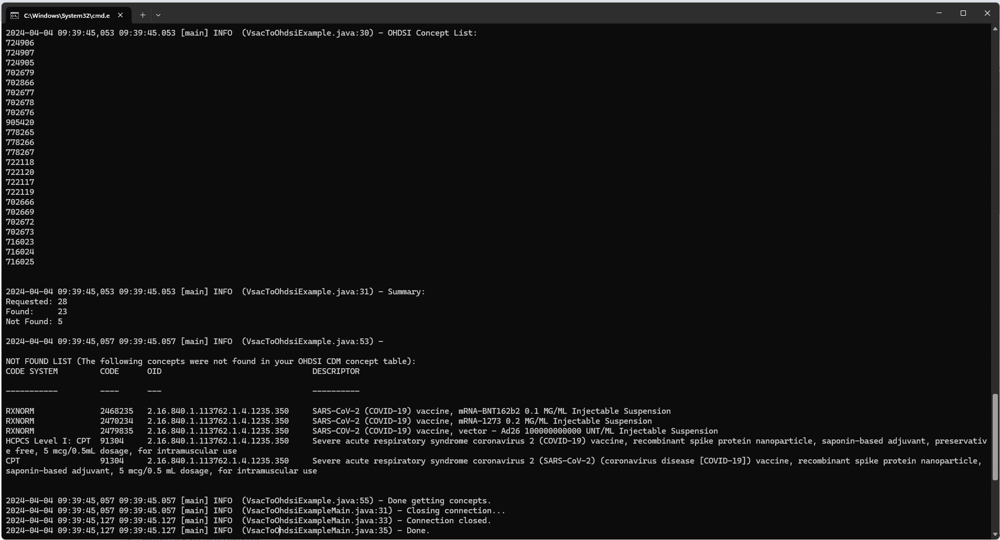

VSAC to OHDSI
VSAC to OHDSI  Getting
Started with VSAC to OHDSI
Getting
Started with VSAC to OHDSI
Introduction
This document describes how to generate a list of OHDSI concept_id values from a VSAC value set exported from VSAC.
-
VSAC
For more information on getting started with VSAC (e.g. creating an account and generating user credentials) refer to:
Getting Started with VSAC -
VSAC Value Sets
For more information on selecting, using, and exporting VSAC value sets refer to:
Getting Started with VSAC Value Sets
The following steps to import a VSAC value set into OHDSI are detailed here
- Download and install the vsac-to-ohdsi standalone application
- Configure the connection to your instance of the CDM and other properties
- Run the vsac-to-ohdsi standalone application to generate OHDSI concept_id values for the concepts in the VSAC value set
- Create an OHDSI concept set for your VSAC concepts using Atlas
- Accessing the vsac-to-ohdsi API programmatically using Java
Install VSAC-TO-OHDSI
The vsac-to-ohdsi standalone application can be downloaded from the
Github page at
https://github.com/NACHC-CAD/vsac-to-ohdsi-example.
A fully build and ready to run version can be downloaded by selecting
the link for the latest release and then downloading the zip file for
that version.
Navigate the the Github repository and select
the latest release.

Download the zip file.

After extracting the zip file you should see a folder
that contains the vsac-to-ohdsi.jar file, a test folder, a lib folder,
and an auth folder. The vsac-to-ohdsi.jar file is the executable for the
standalone application. The test folder contains some files from VSAC
that can be used for testing. The lib folder contains the jar files for
the dependencies of the standalone application. The auth folder contains
the configuration files that will be use to configure this application
for your specific implementation (e.g. database type, schema name,
database connectivity, etc.).

Configure
- Open the ./auth folder
- Open the auth.properties file
- Update this file with your configuration
The auth.properties provided by default includes the following. If you are using Databricks you will only need to change the url and the token values.
JdbcUrl=jdbc:spark://nachc-databricks.cloud.databricks.com:443/vsac_to_omop;transportMode=http;ssl=1;httpPath=sql/protocolv1/o/3956472157536757/0123-223459-leafy532;AuthMech=3;UID=token;PWD=
Token=MY_SECRET_TOKEN_GOES_HERE
SchemaName=vsac_to_omop
DatabaseType=spark-
JdbcUrl
The url that points the the CDM schema that contains the vocabulary tables you are using -
Token
The token/password that will be used to connect to the database -
SchemaName
The name of the database that contains the vocabulary tables you are using -
DatabaseType
The RDMS that will be used (e.g. Spark (Databricks), PostgreSql, MS SqlServer, etc.)
Run VSAC-TO-OHDSI
To run vsac-to-ohdsi open a cmd window and navigate to the directory where the files were unszipped. Enter the command shown below using the path to the zip file downloaded from VSAC you would like to use. In this example we are using a file that was downloaed from VSAC that is provided in the test folder of the vsac-to-ohdsi download.
java -jar vsac-to-ohdsi.jar "./test/zip/RetrieveMultipleValueSets_2.16.840.1.113762.1.4.1235.350.txt.zip"After the code has completed you should see output similar to the
following.

The important pieces of the output include the
following.
The list of OHDSI concept_id values
2024-04-04 09:39:45,053 09:39:45.053 [main] INFO (VsacToOhdsiExample.java:30) - OHDSI Concept List: 724906 724907 724905 702679 702866 702677 702678 702676 905420 778265 778266 778267 722118 722120 722117 722119 702666 702669 702672 702673 716023 716024 716025
The number of codes in the VSAC value set (Requested), the
number of concepts that could be mapped to the OHDSI concept_id values
in your CDM, and the number of concepts that were not found.
2024-04-04 09:39:45,053 09:39:45.053 [main] INFO (VsacToOhdsiExample.java:31) - Summary: Requested: 28 Found: 23 Not Found: 5
A list of the VSAC concepts that were not found.
2024-04-04 09:39:45,057 09:39:45.057 [main] INFO (VsacToOhdsiExample.java:53) - NOT FOUND LIST (The following concepts were not found in your OHDSI CDM concept table): CODE SYSTEM CODE OID DESCRIPTOR ----------- ---- --- ---------- RXNORM 2468235 2.16.840.1.113762.1.4.1235.350 SARS-CoV-2 (COVID-19) vaccine, mRNA-BNT162b2 0.1 MG/ML Injectable Suspension RXNORM 2470234 2.16.840.1.113762.1.4.1235.350 SARS-CoV-2 (COVID-19) vaccine, mRNA-1273 0.2 MG/ML Injectable Suspension RXNORM 2479835 2.16.840.1.113762.1.4.1235.350 SARS-COV-2 (COVID-19) vaccine, vector - Ad26 100000000000 UNT/ML Injectable Suspension HCPCS Level I: CPT 91304 2.16.840.1.113762.1.4.1235.350 Severe acute respiratory syndrome coronavirus 2 (COVID-19) vaccine, recombinant spike protein nanoparticle, saponin-based adjuvant, preservative free, 5 mcg/0.5mL dosage, for intramuscular use CPT 91304 2.16.840.1.113762.1.4.1235.350 Severe acute respiratory syndrome coronavirus 2 (SARS-CoV-2) (coronavirus disease [COVID-19]) vaccine, recombinant spike protein nanoparticle, saponin-based adjuvant, 5 mcg/0.5 mL dosage, for intramuscular use